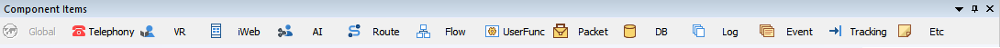
· 편집창 바로 위에 툴바 형태로 있으며, 아이템 그룹 버튼을 클릭하면 아이템들이 메뉴로 제공 됩니다.
· 메뉴 아이템들은 클릭하면 편집창의 고정된 특정 위치부터 추가 됩니다.
GLOBAL
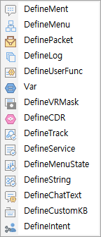 |
DefinePacket |
전문을 정의 합니다. |
|---|---|---|
DefineMent |
멘트 리스트를 정의 합니다. | |
DefineMenu |
메뉴트리를 정의 합니다. | |
DefineLog |
로그 정보를 정의 합니다. | |
DefineUserFunc |
사용자 함수를 정의 합니다. | |
Var |
전역변수를 정의 합니다. | |
DefineVRMask |
음성인식어 마스크 리스트를 정의 합니다. | |
DefineCDR |
User CDR 처리를 위한 Stored Procedure를 정의 합니다. | |
DefineTrack |
Tracking ID를 정의 합니다. | |
DefineService |
서비스 코드를 정의 합니다. | |
DefineMenuStat |
사용자 메뉴 통계 항목을 정의 합니다. | |
DefineString |
문자열 파싱을 위한 포멧을 정의 합니다. | |
DefineChatText |
쳇 텍스트 리스트를 정의 합니다. | |
DefineCustomKB |
사용자 정의 가상 키보드 리스트를 정의 합니다. | |
DefineIntent |
Intent 및 Entity 를 정의한다. |
TELEPHONY
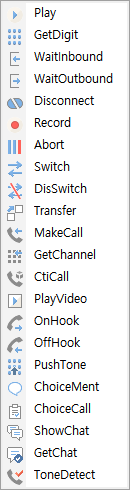 |
Play | 멘트를 송출 합니다. |
|---|---|---|
| GetDigit | 디지트를 입력 받습니다. | |
| WaitInbound | 전화 받기를 대기 합니다. | |
| WaitOutbound | 전화 걸기를 대기합니다. | |
| Disconnect | 전화 연결을 끊습니다. | |
| Record | 녹음을 합니다. | |
| Abort | 멘트 송출, 녹음등 미디어 처리를 중지 시킵니다. | |
| Switch | 설정한 채널을 라우팅 합니다. | |
| DisSwitch | 라우팅 연결을 해제 합니다. | |
| Transfer | 호 전환을 수행 합니다. | |
| MakeCall | 전화를 겁니다. | |
| GetChannel | 전화를 걸기 위해 채널을 할당 받습니다. | |
| CtiCall | CTI 를 연동 합니다. | |
| PlayVideo | 영상을 송출 합니다. | |
| OnHook | 전화를 끊습니다. | |
| OffHook | 전화를 받습니다. | |
| PushTone | 디지트 톤을 송출 합니다. | |
| ChoiceMent | 멘트 타입을 선택합니다. | |
| ChoiceCall | 멀티 콜에서 콜을 선택 합니다. | |
| ShowChat | 쳇을 전송 합니다. | |
| GetChat | 쳇 입력을 기다립니다. | |
| ToneDetect | Tone 분석을 통한 연결을 감지합니다 |
VR
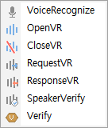
|
VoiceRcognize | 음성인식을 합니다. |
|---|---|---|
| OpenVR | 음성인식 채널을 할당 합니다. | |
| CloseVR | 음성신식 채널을 해제 합니다. | |
| RequestVR | 음성인식을 시작 합니다. | |
| ResponseVR | 음성인식 결과를 기다립니다. | |
| SpeakerVerify | 화자인증을 합니다. | |
| Verify | 음성인식 관련 통계 데이터를 생성 합니다. | |
iWEB
|
RequestPage | 웹 페이지를 출력 하도록 요청 합니다. |
|---|---|---|
| GetPageData | 웹 페이지에 입력된 값을 웹 서버에 요청하여 받습니다. | |
| RequestPush | 웹 페이지 또는 이미지를 모바일 폰의 앱으로 전송하여 출력 합니다. | |
| RequestInfo | 요청정보를 가져옵니다.(서비스 정보, 서비스 코드, Application 활성정보) | |
| RegistServer | ICM에 WCE서버 정보를 등록 합니다. | |
| UnregistServer | ICM에 등록된 WCE서버 정보를 해제 합니다. | |
| WaitWebInbound | 지정된 시간만큼 Connect Request를 기다립니다. | |
| DisconnectWeb | 웹 콜을 종료합니다. |

AI
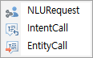 |
NLURequest | STT 입력 Text를 NLU 를 통하여 분석하여 Intent 및 Entity를 얻는다. |
|---|---|---|
| IntentCall | NLU 로 분석된 Intent 에 해당하는 Intent 입력 SubCall 또는 MenuCall 호출한다. | |
| EntityCall | Intent 에 해당하는 Entity를 입력받기 위한 Flow 생성, 호출한다. |
Route
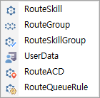 |
RouteSkill | 상담원 스킬 및 레벨에 따라서 호를 분배 하는 기능을 제공합니다. |
|---|---|---|
| RouteGroup | 상담 그룹 별로 호를 분배 하는 기능을 제공합니다. | |
| RouteSkillGroup | 상담 스킬그룹 별로 호를 분배 하는 기능을 제공합니다. | |
| UserData | 사용자 데이터 값을 읽어 오거나 갱신 합니다. | |
| RouteACD | 큐에 미리 설정된 착신 목적지를 기준으로 호를 분배 하는 기능을 제공합니다. | |
| RouteQueueRule | 큐에 정의된 라우팅 옵션을 기준으로 호를 분배 하는 기능을 제공합니다. |
FLOW
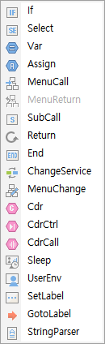 | If | 조건을 비교하여 참과 거짓으로 분기 합니다. |
|---|---|---|
| Select | 조건을 비교하여 다중 분기 합니다. | |
| Var | 지역변수를 정의 합니다. | |
| Assign | 변수에 값을 할당 합니다. | |
| MenuCall | 정의된 메뉴를 호출 합니다. | |
| MenuReturn | 메뉴 시나리오에서 리턴 합니다. | |
| SubCall | 시나리오를 호출 합니다. | |
| Return | 시나리오에서 리턴 합니다. | |
| End | 시나리오를 끝냅니다. | |
| ChangeService | 서비스 시나리오를 변경 합니다. | |
| MenuChange | 메뉴를 변경 합니다. | |
| Cdr | CDR 데이터를 생성 합니다. | |
| CdrCtrl | CDR 컨트롤러로 CDR을 초기화 합니다.(Init CDR) | |
| CdrCall | 콜이 종료될 때 CDR이 처리되지 않고 바로 CDR을 처리합니다. | |
| Sleep | 설정한 시간 만큼 중지 합니다. | |
| UserEnv | 사용자 환경 파일을 사용 합니다. | |
| SetLabel | 이동할 라벨을 설정 합니다. | |
| GotoLabel | 설정한 SetLabel 아이템으로 이동 합니다. | |
| StringParser | 문자열을 입력받아 정의된 포멧에 따라 파싱 합니다. |
UserFunc
UserFuncCall |
사용자 함수를 호출 합니다. |
|---|
PACKET
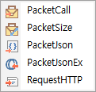 |
PacketCall | 전문을 보내고 받습니다. |
|---|---|---|
| PacketSize | 전문을 보내기 전에 전문 사이즈를 구합니다. | |
PacketJson |
전문 정의 없이 Json 전문을 보냅니다. |
|
PacketJsonEx |
전문 정의 없이 Json 전문을 고도화하여 보냅니다. |
|
RequestHTTP |
HTTP 프로토콜을 이용하여 Json 전문을 보냅니다 |
|
DB
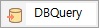 |
DBQuery |
DB 쿼리를 요청 합니다. |
|---|
LOG
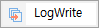 |
LogWrite |
로그를 기록 합니다. |
|---|
EVENT
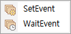 |
SetEvent | 이벤트를 세팅 합니다. |
|---|---|---|
| WaitEvent | 이벤트를 기다립니다. | |
TRACKING
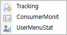 |
Tracking | 트래킹 데이터를 생성 합니다. |
|---|---|---|
| ConsumerMonit | 사용자 모니터링을 합니다. | |
| UserMenuStat | 사용자 메뉴 통계를 처리 합니다. | |
MEMO
Memo |
메모를 생성 합니다. |
|---|